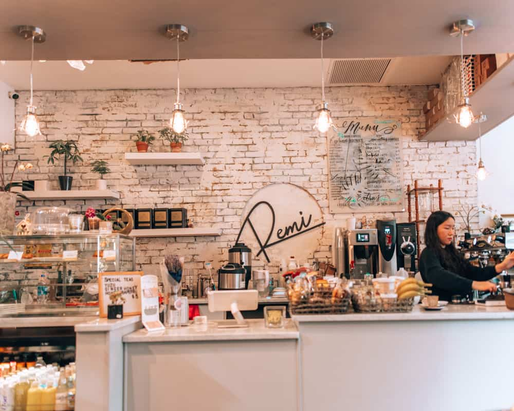
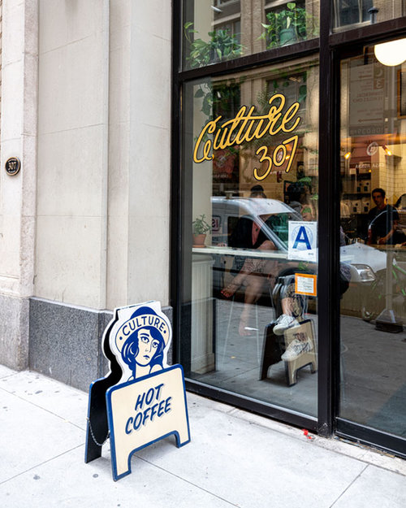
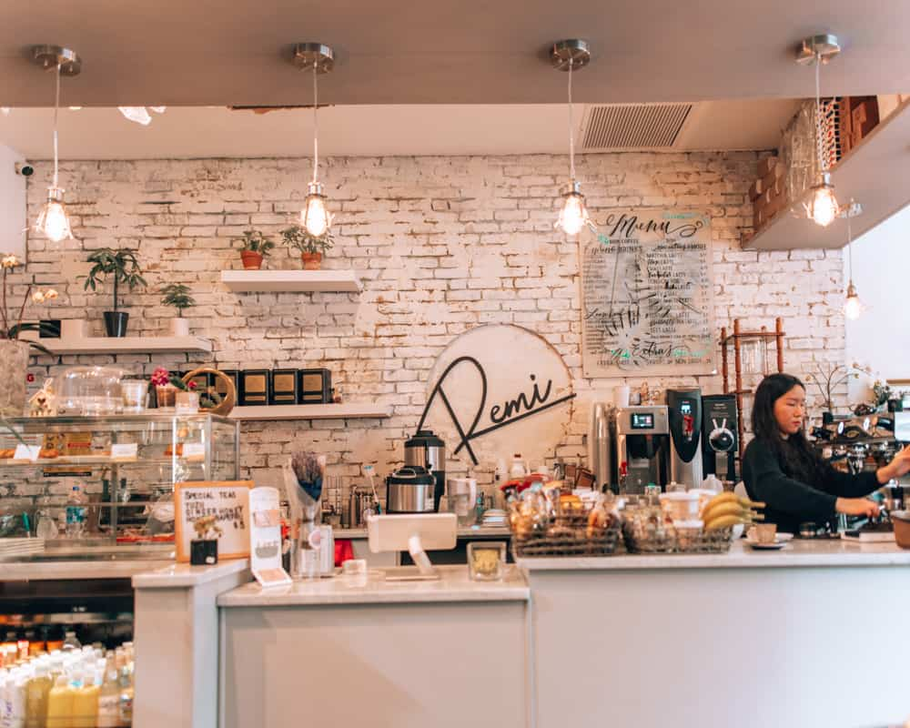
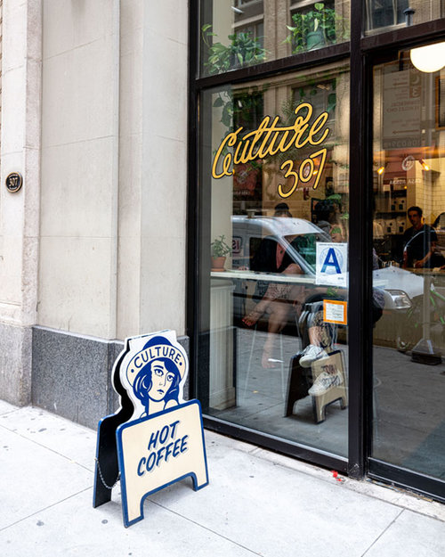

King's street is part of a network of coffee shops around Manhattan, Brooklyn, and Long Island city. Together, our shops are committed to making quality coffee, sourcing ethically, paying employees an excellent wage, and uplifting other small businesses in our local community. Our shops often host cross-shop pop-ups and events for good local causes and share best practices regarding sustainability, inclusion, and all-things coffee. We believe the saying that if you want to go fast, go alone, if you want to go far, go together. Each shop on this list has a different vibe, a different menu, and a beautiful approach to coffee and community. When you get a chance, explore the coffee offerings and the surrounding neighborhoods of these amazing sister spots. Just remember to come back!

 




Interested in joining our Coffee Shop Network? Email us at NYCoffeeNetwork@gmail.com with a brief introduction of you and your coffee shop! Let us know why you want to join! Please include information such as your location, your mission statement, your shop's history, and how you have been or hope to contribute to your local community. We will contact you if we think your shop could benefit from our network and vice versa.
Diversity is at the core of our vision for this network. We're committed to modeling diversity and inclusion within our netowrk and to maintaining an inclusive environment with equitable treatment for all.